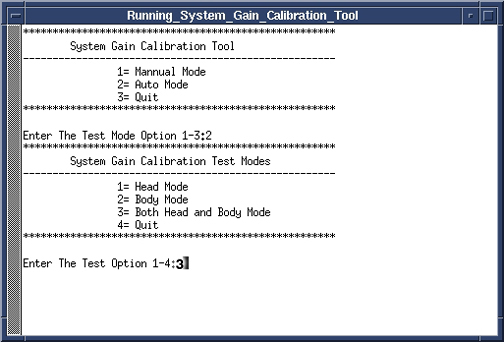

Operating Documentation
Direction 5440000, Rev# 5
Signa HDxt Service Methods
Module Version 4.0, Version Date 10/6/10
Operating Documentation |
| Required Persons | Preliminary Reqs | Procedure | Finalization |
|---|---|---|---|
| 1 | Not Applicable | 20 mins | 10 mins |
| Item | Qty | Effectivity | Part# | Manufacturer | |
|---|---|---|---|---|---|
| NiCl TLT Head Sphere | 1 | 1.5T | 46-265826G6 | - | |
| Head Loader | 1 | 1.5T | 46-287899G1 | - | |
| Body TLT Sphere | 1 | 1.5T | 46-265635G6 | - | |
| SPT Body Loader | 1 | 1.5T | 2135652-2 | - | |
| Head Sphere | 1 | 3.0T | 2359877 | - | |
| Head Loader | 1 | 3.0T | 2360031 | - | |
| Head Loader Positioner | 1 | 3.0T | 5110241 | - | |
| 3T Body Sphere | 1 | 3.0T | 2360025 | - | |
| SPT Loader | 1 | 3.0T | 2360037 | - | |
| ||||
| POISON HAZARD! | ||||
| 1.5T Phantoms CONTAIN NICKEL, A SUSPECT CARCINOGEN. | ||||
| DO NOT INGEST. DISPOSE OF AS A HAZARDOUS WASTE ACCORDING TO STATE AND FEDERAL REGULATIONS. |
| ||||
| POISON HAZARD! | ||||
| 3.0T Phantoms CONTAIN Dimethyl Silicon Fluid. | ||||
| DO NOT INGEST. If a leak or spill occurs, wipe up or absorb in inert material and place in a container for disposal. Incineration or landfill is the recommended disposal method. |
| Condition | Reference | Effectivity |
|---|---|---|
Signa software fully operational. | - | - |
No image artifacts. | - | - |
Gradient Calibration (Gradcal) is complete. | - | - |
For systems with the new Split Top head coil position SNR Sphere in the head loader as shown in Illustration 1. Fasten the strap to the top of the head loader to secure the SNR Sphere inside the loader. Position the head loader on top of the Head TLT loader positioner within the head coil so the loader is centered and the loader axial mark is at the center of the head coil window. See Illustration 2.
Illustration 1: Position SNR Sphere in Head Loader

Illustration 2: Landmarking Head SNR Sphere

For systems with the quad head coil, the DQA phantom is used to help position the coil. Position the DQA phantom in the head coil. Turn on the alignment lights and align so the center of the DQA phantom matches the axial beam. Then place the head TLT sphere in the head loader and fasten the strap to the top of the head loader to secure the sphere. Remove the DQA phantom and replace with the head loader/sphere centering it using the axial alignment light.
(For Sites WITH a Nesting Plate) Position Head Sphere and Loader; establish landmark as follows:
Place the SPT Body Loader and Body Sphere after the head coil. Make sure to place these on the nesting plate. See Illustration 3.
| NOTE: | There should be no gap between the nesting plate and the head coil as shown in Illustration 3. |
Illustration 3: Phantom Setup

Landmark on the head coil. As the calibration runs, the table will move to the body coil scan by itself.
(For Sites WITHOUT a Nesting Plate) Position Head Sphere and Loader; establish landmark as follows:
Properly position the Head Sphere and Loader as previously noted, but do not Advance to Scan.
Establish landmark on the center line of the Head Loader.
Run the cradle in so the display reads 1135 mm. (See illustration below.)
Illustration 4: Distance between Head Coil Landmark and Center Mark on Body Loader

Turn on the alignment light and then position the body loader on the cradle so that the alignment light is properly centered on the loader crosshair. Place wedges on both sides of the body loader to prevent movement.
As a final positioning check, ensure that:
The head coil is in position.
The TLT Phantom is all the way in the head coil.
Press [Advance to Scan].
Start the System Gain Calibration Tool.
Starting restricted service tools available to GE Field Service:
Ensure that a service key is installed.
Select [Calibration Wizard] from the calibration menu and select [Click here to start this tool] to launch the wizard.
Select [System Gain Calibration] from the menu and review and verify the prerequisites are met.
Select [Click here to start this tool] to start the procedure.
If you are unable to start the Restricted Service tools, use the non-proprietary method described in the next bullet.
Starting non-proprietary service tools:
From the Common Service Desktop, select [Calibration].
Select [System Gain Calibration] from the calibration menu, and select [Click here to start this tool] to start the procedure.
| NOTE: | If running System Gain after initial software load, you will be prompted to enter the proper nesting plate. Type 1 for the short nesting plate or 2 for the long nesting plate. If the nesting plate type is incorrect, manually delete the nesting plate file and run System Gain again. The nesting plate file is at: /w/config/spt_nesting |
Once the tool starts, type 2<Enter> for Auto Mode. See Illustration 5.
Type 3<Enter> to select both Head and Body Mode. See Illustration 5.
Illustration 5: Starting Head and Body Calibration

Analysis then begins. When testing is complete, results of the calibration will be displayed on the screen, and if adjustments are required, you will be asked “Do you want to save the recon scale factor”. Press the <Enter> key since “Y” is the default to save the calibration file. See Illustration 6.
Illustration 6: Calibration Output

Type 4<Enter> to exit the tool. Calibration is complete.
Remove phantoms and Service Tools used during the calibration.
Reboot the system.
Do a test scan with the system.